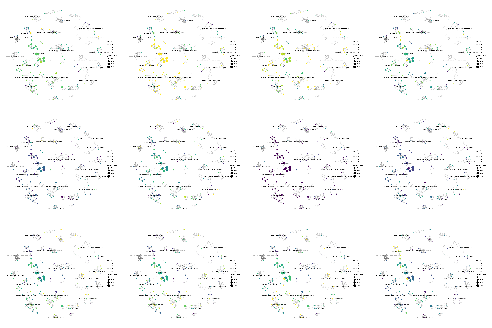
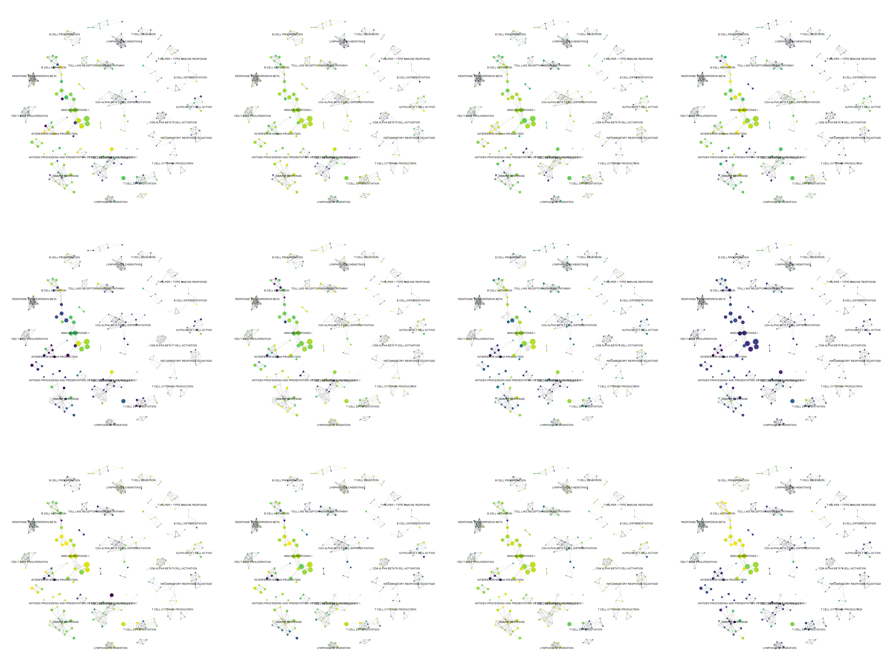
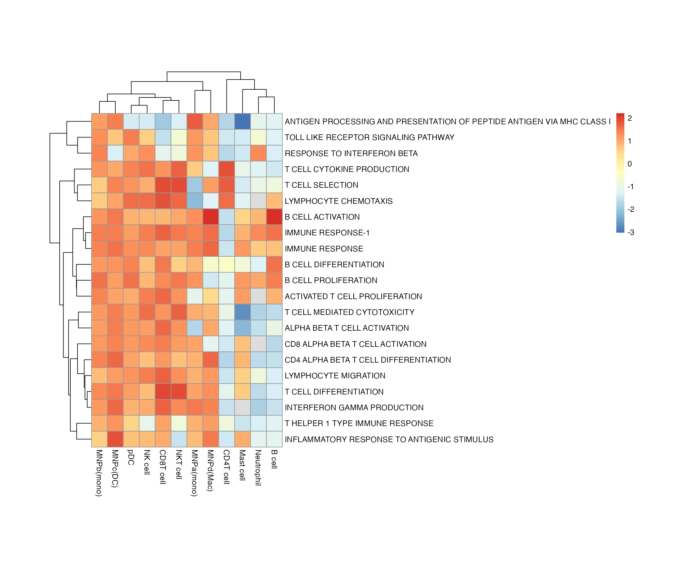

Introduction to bowerbird
2021-06-29
bowerbird_vignette.rmd

bowerbird
A single-cell package for Functional Annotation + Gene Module Summarization.

Bowerbirds are famous for the elaborate and sometimes whimsical structures that males build to court females.

Picture credits: A satin bowerbird’s bower, decorated with blue objects. © Stefan Marks / Flickr
I’m not sure if this mating ritual is in anyway similar to my attempts to visualise pathway analyses and their association with celltype identities/states… who cares. It’s just a name.
Installation
# because currently private, requires specifying personal github access token
devtools::install_github('clatworthylab/bowerbird', auth_token = "insert_your_personal_github_access_token")
# or clone this repo and do devtools::install('path/of/folder/to/bowerbird')Quick Usage
Pathway analyis is tricky; often there’s too many pathways/terms to use and it’s not easy to distinguish how important every element is. bowerbird attempts to summarise your pathways of interests into potentially meaningful functional annotation modules which you can then take forward to pathway analyses, or the reverse situation where you have a set of pathways that were determined a priori to be significant and you wanted to find out how to interpret it. To do this, we compute a shortest nearest neighbor graph using the genes in the gene sets/pathways and learn a representative summary term from the name of the gene sets that cluster together.
library(bowerbird)
bwr <- bower(gmt_file)
bwr <- snn_graph(bwr)
bwr <- find_clusters(bwr)
bwr <- summarize_clusters(bwr)
bwr <- enrich_genesets(sce, bwr)Full example
library(bowerbird)
gmt_file <- system.file("extdata", "h.all.v7.4.symbols.gmt", package = "bowerbird") # read in a .gmt file
bwr <- bower(gmt_file) # this performs a read_geneset step internally, which accepts .gmt, .gmx, .csv, .tsv, .txt, or R objects as list or data.frame format.
#> Loading required namespace: S4Vectors
bwr <- snn_graph(bwr)
#> Loading required namespace: FNN
bwr <- find_clusters(bwr)
#> Loading required namespace: ggraph
bwr <- summarize_clusters(bwr)
#> Downloading udpipe model from https://raw.githubusercontent.com/jwijffels/udpipe.models.ud.2.5/master/inst/udpipe-ud-2.5-191206/english-ewt-ud-2.5-191206.udpipe to /var/folders/24/8k48jl6d249_n_qfxwsl6xvm0000gn/T//RtmpUV61kv/english-ewt-ud-2.5-191206.udpipe
#> - This model has been trained on version 2.5 of data from https://universaldependencies.org
#> - The model is distributed under the CC-BY-SA-NC license: https://creativecommons.org/licenses/by-nc-sa/4.0
#> - Visit https://github.com/jwijffels/udpipe.models.ud.2.5 for model license details.
#> - For a list of all models and their licenses (most models you can download with this package have either a CC-BY-SA or a CC-BY-SA-NC license) read the documentation at ?udpipe_download_model. For building your own models: visit the documentation by typing vignette('udpipe-train', package = 'udpipe')
#> Downloading finished, model stored at '/var/folders/24/8k48jl6d249_n_qfxwsl6xvm0000gn/T//RtmpUV61kv/english-ewt-ud-2.5-191206.udpipe'
bwr
#> BOWER class
#> number of genesets: 50
#> genesets kNN Graph:
#> IGRAPH 83d5c30 UNW- 50 124 --
#> + attr: name (v/c), cluster (v/n), geneset_size (v/n), terms (v/c),
#> | labels (v/c), weight (e/n)
#> + edges from 83d5c30 (vertex names):
#> [1] HALLMARK_TNFA_SIGNALING_VIA_NFKB--HALLMARK_HYPOXIA
#> [2] HALLMARK_TNFA_SIGNALING_VIA_NFKB--HALLMARK_TGF_BETA_SIGNALING
#> [3] HALLMARK_TNFA_SIGNALING_VIA_NFKB--HALLMARK_IL6_JAK_STAT3_SIGNALING
#> [4] HALLMARK_TNFA_SIGNALING_VIA_NFKB--HALLMARK_APOPTOSIS
#> [5] HALLMARK_TNFA_SIGNALING_VIA_NFKB--HALLMARK_MYOGENESIS
#> [6] HALLMARK_TNFA_SIGNALING_VIA_NFKB--HALLMARK_COMPLEMENT
#> + ... omitted several edges
#> number of geneset clusters: 9
#> Core genes:
#> First six genes shown
#> XENOBIOTIC METABOLISM : LIFR DNAJB9 CD36 ACOX1 IDH1 ECH1 ...
#> E2F TARGETS : SAC3D1 KIF11 KIF23 RACGAP1 NUMA1 KIF2C ...
#> ESTROGEN RESPONSE EARLY : JAG1 CTNNB1 GNAI1 FDFT1 DHCR7 FASN ...
#> APOPTOSIS : ATF3 IER3 BIRC3 JUN EGR3 IL1B ...
#> INTERFERON ALPHA RESPONSE : MX1 ISG15 IFIT3 IFI44 IFI35 IRF7 ...
#> HEDGEHOG SIGNALING : VEGFA VLDLR MYH9 ERO1A DDIT4 STC2 ...
#> APICAL JUNCTION : EGFR ADAM10 CLTC AP2M1 ARF1 MAPK1 ...
#> TGF BETA SIGNALING : TGFB1 PMEPA1 SERPINE1 ID2 THBS1 PPP1R15A ...
#> IL6 JAK STAT3 SIGNALING : IL4R IFNGR1 IL1R2 IL3RA TNFRSF1B CSF1 ...Examples of different ways of loading in genesets
Doing some manual editing of a predefined geneset.
# download from msigdb website
file <- system.file("extdata", "c5.go.bp.v7.4.symbols.gmt", package = "bowerbird")
# manualy read in to do some fine adjustments/filtering
geneset <- read_geneset(file) # reads in gene file manually
# do a bit of manual filtering
geneset <- geneset[grep('B_CELL|T_CELL|NATURAL_KILLER|ANTIBODY|ANTIGEN|LYMPHOCYTE|IMMUNE|INTERFERON|TOLL|INNATE|ADAPTIVE', names(geneset))]
geneset <- geneset[!grepl('TROPHOBLAST_CELL|FAT_CELL|ENT_CELL', names(geneset))]
bwr <- bower(geneset)
bwr <- snn_graph(bwr)
bwr <- find_clusters(bwr)
bwr <- summarize_clusters(bwr)
#> Downloading udpipe model from https://raw.githubusercontent.com/jwijffels/udpipe.models.ud.2.5/master/inst/udpipe-ud-2.5-191206/english-ewt-ud-2.5-191206.udpipe to /var/folders/24/8k48jl6d249_n_qfxwsl6xvm0000gn/T//RtmpUV61kv/english-ewt-ud-2.5-191206.udpipe
#> - This model has been trained on version 2.5 of data from https://universaldependencies.org
#> - The model is distributed under the CC-BY-SA-NC license: https://creativecommons.org/licenses/by-nc-sa/4.0
#> - Visit https://github.com/jwijffels/udpipe.models.ud.2.5 for model license details.
#> - For a list of all models and their licenses (most models you can download with this package have either a CC-BY-SA or a CC-BY-SA-NC license) read the documentation at ?udpipe_download_model. For building your own models: visit the documentation by typing vignette('udpipe-train', package = 'udpipe')
#> Downloading finished, model stored at '/var/folders/24/8k48jl6d249_n_qfxwsl6xvm0000gn/T//RtmpUV61kv/english-ewt-ud-2.5-191206.udpipe'
bwr
#> BOWER class
#> number of genesets: 224
#> genesets kNN Graph:
#> IGRAPH 985a7d9 UNW- 224 669 --
#> + attr: name (v/c), cluster (v/n), geneset_size (v/n), terms (v/c),
#> | labels (v/c), weight (e/n)
#> + edges from 985a7d9 (vertex names):
#> [1] GOBP_NEURAL_CREST_CELL_MIGRATION--GOBP_NATURAL_KILLER_CELL_DIFFERENTIATION
#> [2] GOBP_NEURAL_CREST_CELL_MIGRATION--GOBP_SOMATIC_DIVERSIFICATION_OF_IMMUNE_RECEPTORS_VIA_SOMATIC_MUTATION
#> [3] GOBP_NEURAL_CREST_CELL_MIGRATION--GOBP_NEURAL_CREST_CELL_DIFFERENTIATION
#> [4] GOBP_NEURAL_CREST_CELL_MIGRATION--GOBP_MODULATION_BY_VIRUS_OF_HOST_CELLULAR_PROCESS
#> [5] GOBP_NEURAL_CREST_CELL_MIGRATION--GOBP_VIRAL_RELEASE_FROM_HOST_CELL
#> + ... omitted several edges
#> number of geneset clusters: 22
#> Core genes:
#> First six genes shown
#> TOLL LIKE RECEPTOR SIGNALING PATHWAY : TAB1 LILRA2 CHUK TAB2 TAB3 TBK1 ...
#> ANTIGEN PROCESSING AND PRESENTATION OF PEPTIDE ANTIGEN : ABCB9 HFE HLA-A HLA-B HLA-C HLA-E ...
#> IMMUNE RESPONSE : ADA C17orf99 PARP3 IGLL5 MICA KLRC4-KLRK1 ...
#> ALPHA BETA T CELL DIFFERENTIATION : BATF LILRB1 FGL2 MALT1 NLRP3 SLAMF6 ...
#> RESPONSE TO INTERFERON BETA : SEMA3A SEMA6C SEMA6B SEMA4F SEMA4D SEMA4B ...
#> LYMPHOCYTE MIGRATION : TBK1 IRF3 IRF7 FADD IKBKE ADAM10 ...
#> T CELL MEDIATED IMMUNITY : LILRB1 RIPK3 IL23R AGER FCGR2B HLA-A ...
#> T CELL PROLIFERATION : ADA C17orf99 PARP3 ADAM8 CDH17 PSMD14 ...
#> LYMPHOCYTE APOPTOTIC PROCESS : ADA RIPK3 FOXP3 RAG1 BCL2 RPS6 ...
#> CYTOKINE PRODUCTION INVOLVED IN IMMUNE RESPONSE : MALT1 LILRB4 NLRP3 CLC CD55 DENND1B ...
#> IMMUNE RESPONSE-1 : PARP3 MICA CD96 LILRB1 FGL2 SPINK5 ...
#> MAST CELL ACTIVATION : LYN PDPK1 SYK CD300A BLK BTK ...
#> T CELL SELECTION : IL23R IL12B IL12RB1 IL23A BATF SLAMF6 ...
#> MATURE B CELL DIFFERENTIATION INVOLVED IN IMMUNE RESPONSE : PARP3 MAD2L2 BATF SHLD3 EXOSC6 SLC15A4 ...
#> B CELL ACTIVATION : IGLL5 RASGRP1 IGHV2-70D IGHV1-69D IGHV3-64D CEBPG ...
#> B CELL PROLIFERATION : ADA BCL2L11 LYN MIR17HG PKN1 BAK1 ...
#> CD4 ALPHA BETA T CELL DIFFERENTIATION-1 : IL23R IL27 ANXA1 HLX NLRP10 IL1B ...
#> ANTIGEN RECEPTOR MEDIATED SIGNALING PATHWAY : CD300A FCRL3 GCSAML NFAM1 ELF1 ELF2 ...
#> NATURAL KILLER CELL MEDIATED IMMUNITY : MICA KLRC4-KLRK1 RASGRP1 CD96 CD226 LILRB1 ...
#> HUMORAL IMMUNE RESPONSE : DEFA1 DEFA3 DEFA4 DEFA5 DEFA6 DEFB1 ...
#> CD4 ALPHA BETA T CELL DIFFERENTIATION : RC3H1 TBX21 ANXA1 HLX HMGB1 IL2 ...
#> INFLAMMATORY RESPONSE TO ANTIGENIC STIMULUS : PARK7 ADCYAP1 CCR7 CNR1 IL31RA ELANE ...Or extracting from msigdbr.
library(msigdbr)
GO <- data.frame(msigdbr::msigdbr(category = "C5", subcategory = "GO:BP"))
genesets <- GO[grep('B_CELL|T_CELL|NATURAL_KILLER|ANTIBODY|ANTIGEN|LYMPHOCYTE|IMMUNE|INTERFERON|TOLL|INNATE|ADAPTIVE', GO$gs_name), ]
genesets <- genesets[!grepl('TROPHOBLAST_CELL|FAT_CELL|ENT_CELL', genesets$gs_name), ]
# convert to list
gs_list <- lapply(unique(genesets$gs_name), function(x) genesets[genesets$gs_name %in% x, "gene_symbol"])
names(gs_list) <- unique(genesets$gs_name)
bwr <- bower(gs_list)
bwr <- snn_graph(bwr)
bwr <- find_clusters(bwr)
bwr <- summarize_clusters(bwr)
#> Downloading udpipe model from https://raw.githubusercontent.com/jwijffels/udpipe.models.ud.2.5/master/inst/udpipe-ud-2.5-191206/english-ewt-ud-2.5-191206.udpipe to /var/folders/24/8k48jl6d249_n_qfxwsl6xvm0000gn/T//RtmpUV61kv/english-ewt-ud-2.5-191206.udpipe
#> - This model has been trained on version 2.5 of data from https://universaldependencies.org
#> - The model is distributed under the CC-BY-SA-NC license: https://creativecommons.org/licenses/by-nc-sa/4.0
#> - Visit https://github.com/jwijffels/udpipe.models.ud.2.5 for model license details.
#> - For a list of all models and their licenses (most models you can download with this package have either a CC-BY-SA or a CC-BY-SA-NC license) read the documentation at ?udpipe_download_model. For building your own models: visit the documentation by typing vignette('udpipe-train', package = 'udpipe')
#> Downloading finished, model stored at '/var/folders/24/8k48jl6d249_n_qfxwsl6xvm0000gn/T//RtmpUV61kv/english-ewt-ud-2.5-191206.udpipe'
bwr
#> BOWER class
#> number of genesets: 265
#> genesets kNN Graph:
#> IGRAPH 47ab989 UNW- 265 843 --
#> + attr: name (v/c), cluster (v/n), geneset_size (v/n), terms (v/c),
#> | labels (v/c), weight (e/n)
#> + edges from 47ab989 (vertex names):
#> [1] GOBP_ACTIVATED_T_CELL_PROLIFERATION--GOBP_CD8_POSITIVE_ALPHA_BETA_T_CELL_DIFFERENTIATION
#> [2] GOBP_ACTIVATED_T_CELL_PROLIFERATION--GOBP_NEGATIVE_REGULATION_OF_ACTIVATED_T_CELL_PROLIFERATION
#> [3] GOBP_ACTIVATED_T_CELL_PROLIFERATION--GOBP_NEGATIVE_REGULATION_OF_LYMPHOCYTE_DIFFERENTIATION
#> [4] GOBP_ACTIVATED_T_CELL_PROLIFERATION--GOBP_NEGATIVE_REGULATION_OF_T_CELL_RECEPTOR_SIGNALING_PATHWAY
#> [5] GOBP_ACTIVATION_OF_IMMUNE_RESPONSE --GOBP_ACTIVATION_OF_INNATE_IMMUNE_RESPONSE
#> + ... omitted several edges
#> number of geneset clusters: 22
#> Core genes:
#> First six genes shown
#> IMMUNE RESPONSE-1 : AIM2 BCL10 BTRC CARD11 CARD9 CD209 ...
#> CD4 ALPHA BETA T CELL DIFFERENTIATION : ANXA1 ATP7A BATF BCL3 BCL6 CBFB ...
#> IMMUNE RESPONSE : CLNK HLA-E HLA-F IFNA2 IFNB1 IL18 ...
#> T CELL MEDIATED CYTOTOXICITY : HLA-A HLA-B HLA-C HLA-E HLA-F HLA-G ...
#> RESPONSE TO INTERFERON BETA : BCL2L11 HIF1A MEF2C ADA SOS1 SOS2 ...
#> B CELL ACTIVATION : ADA BAX BCL6 BLK BTK CD74 ...
#> CD8 ALPHA BETA T CELL ACTIVATION : HLA-E GATA3 ADCYAP1 BTK C3 CCR7 ...
#> T CELL DIFFERENTIATION : FCGR2B FGL2 HLA-DOA LILRB2 THBS1 BMP4 ...
#> T HELPER 1 TYPE IMMUNE RESPONSE : BATF FOXP3 IL6 TBX21 BCL6 IL2 ...
#> INTERFERON GAMMA PRODUCTION : ABCB9 ACE ACTR10 ACTR1A ACTR1B AP1B1 ...
#> TOLL LIKE RECEPTOR SIGNALING PATHWAY : CACTIN PTPRS TICAM1 TLR3 TLR4 TLR9 ...
#> T CELL CYTOKINE PRODUCTION : KLRC1 LILRB1 NOD2 PTPRC EGR3 LEF1 ...
#> B CELL DIFFERENTIATION : IL10 TLR9 SYK ADA BCL3 C17orf99 ...
#> ACTIVATED T CELL PROLIFERATION : LILRB4 CD24 CD274 FYN HHLA2 ICOSLG ...
#> LYMPHOCYTE CHEMOTAXIS : CCL2 CCL3 CCL4 CCL5 CCL7 CXCL14 ...
#> B CELL ACTIVATION-1 : ADA ADAM17 BATF BCL3 BCL6 BTK ...
#> INFLAMMATORY RESPONSE TO ANTIGENIC STIMULUS : BTK C3 CD28 HLA-E LTA NOD2 ...
#> ALPHA BETA T CELL ACTIVATION : AGER ANXA1 ARG2 ATP7A BATF BCL3 ...
#> T CELL SELECTION : PTPRC TOX RABL3 STAT5B ZBTB1 IL15 ...
#> INNATE IMMUNE RESPONSE IN MUCOSA : IL18 IL18R1 IL4 IL13 IL4R SYK ...
#> ANTIGEN PROCESSING AND PRESENTATION OF PEPTIDE ANTIGEN VIA MHC CLASS I : ABCB9 AZGP1 B2M ERAP1 ERAP2 HFE ...
#> LYMPHOCYTE MIGRATION : ADAM10 ADAM17 ADAM8 AIF1 APP CCL20 ...Geneset average expression testing
To do this, we would need either a single-cell object (SingleCellExperiment or Seurat), or a list containing differential gene testing results.
With popular single-cell methods.
## AUCell
bwr <- enrich_genesets(kidneyimmune, bwr, groupby = 'celltype', mode = 'AUCell')
## Seurat::AddModuleScore
bwr <- enrich_genesets(kidneyimmune, bwr, groupby = 'celltype', mode = 'Seurat')
## scanpy.tl.score_genes
bwr <- enrich_genesets(kidneyimmune, bwr, groupby = 'celltype', mode = 'scanpy')Visualise as a network plot.
library(ggraph)
library(ggplot2)
plot_list <- lapply(colnames(bwr@scores), function(ds){
set.seed(100)
igraph::V(bwr@graph)$score <- bwr@scores[, ds]
g <- ggraph(bwr@graph, 'igraph', algorithm = 'fr') +
geom_edge_link(aes(width = weight), alpha = .25) +
geom_node_point(aes(color = score, size = geneset_size)) +
scale_size_area(max_size = 8) +
geom_node_text(aes(label = labels), size = 3) +
theme_bw() +
theme_void() +
scale_color_viridis() +
scale_edge_width(range = c(0, 1)) +
ggtitle(ds)
})
names(plot_list) <- colnames(bwr@scores)
cowplot::plot_grid(plotlist = plot_list, scale = 0.9)
Running fgsea on deg tables in a list as an alternative to the single-cell methods.
Here we use a differential expression result for marker genes as input.
degs <- Seurat::FindAllMarkers(kidneyimmune)
degs <- split(degs, degs$cluster) # so in practice, there should be one DEG table per comparison in a list.
bwr <- enrich_genesets(degs, bwr, gene_symbol = 'gene', logfoldchanges = 'avg_log2FC', pvals = 'p_val')Coloured by adjusted p value.
plot_list <- lapply(colnames(bwr@scores$NES), function(ds){
set.seed(100)
padj <- bwr@scores$padj[, ds]
padj[padj >= 0.25] <- NA
igraph::V(bwr@graph)$padj <- padj
g <- ggraph(bwr@graph, 'igraph', algorithm = 'fr') +
geom_edge_link(aes(width = weight), alpha = .25) +
geom_node_point(aes(color = padj, size = geneset_size)) +
scale_size_area(max_size = 8) +
geom_node_text(aes(label = labels), size = 2.5) +
theme_bw() +
theme_void() +
scale_color_viridis(na.value = '#e7e7e7') +
scale_edge_width(range = c(0, 1)) +
ggtitle(ds) + theme(legend.position = 'none')
})
names(plot_list) <- colnames(bwr@scores$NES)
cowplot::plot_grid(plotlist = plot_list, scale = 0.9)
Coloured by normalized enrichment score.
plot_list <- lapply(colnames(bwr@scores$NES), function(ds){
set.seed(100)
NES <- bwr@scores$NES[, ds]
igraph::V(bwr@graph)$NES <- NES
g <- ggraph(bwr@graph, 'igraph', algorithm = 'fr') +
geom_edge_link(aes(width = weight), alpha = .25) +
geom_node_point(aes(color = NES, size = geneset_size)) +
scale_size_area(max_size = 8) +
geom_node_text(aes(label = labels), size = 2.5) +
theme_bw() +
theme_void() +
scale_color_viridis() +
scale_edge_width(range = c(0, 1)) +
ggtitle(ds) + theme(legend.position = 'none')
})
names(plot_list) <- colnames(bwr@scores$NES)
cowplot::plot_grid(plotlist = plot_list, scale = 0.9)
Using core genes for enrichment
Same function as above, just specifying core = TRUE. This will grab the intersecting (or outersecting rather) genes in a gene set cluster and perform the enrichment, like a summary gene set of the summarised terms.
bwr <- enrich_genesets(kidneyimmune, bwr, core = TRUE, groupby = 'celltype') # if mode is not specified, the default option is to use AUCell
pheatmap::pheatmap(bwr@scores, cellheight = 20, cellwidth = 20)
Same for the gsea results.
bwr <- enrich_genesets(degs, bwr, core = TRUE, gene_symbol = 'gene', logfoldchanges = 'avg_log2FC', pvals = 'p_val')
pheatmap::pheatmap(bwr@scores$NES, cellheight = 20, cellwidth = 20)
To visualise as a graph, can consider doing:
bwr2 <- bower(bwr@coregenes)
# and so on